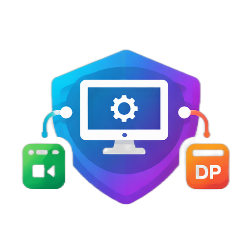

ConnectApp
Профили
Профиль
Сохраняется только путь. Сам файл сертификата остаётся отдельно.
Подключение
В приложении сохраняется только путь к файлу ключа.
SSH tunnel
При сохранении проброса в конфиг запоминается только путь к файлу ключа.
Программы
Hiddify config
Отдельная кнопка копирует готовый JSON-конфиг в буфер обмена.
FxSound preset (.fac)
Файл копируется в папку текущего Windows-пользователя, чтобы на разных аккаунтах всё хранилось отдельно.